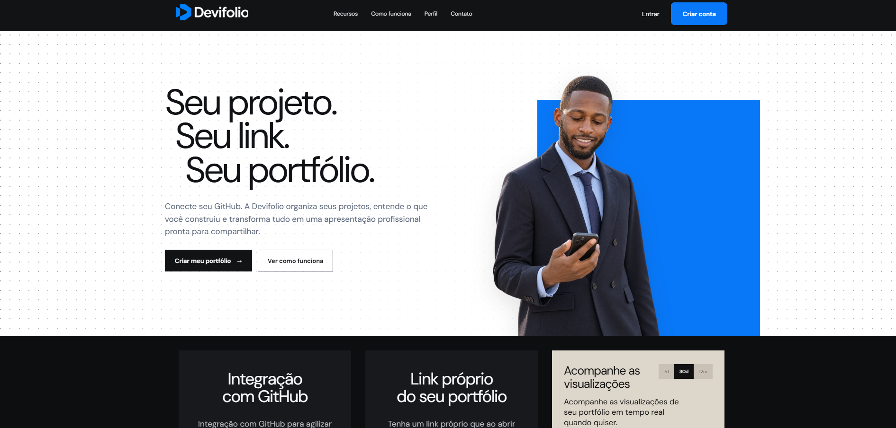
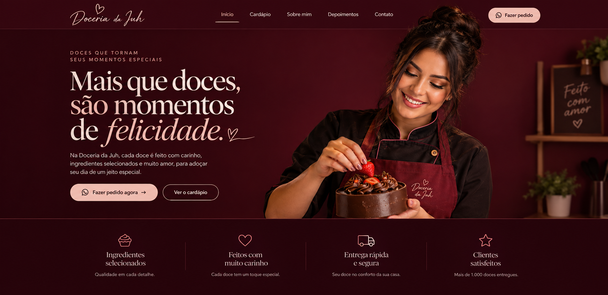
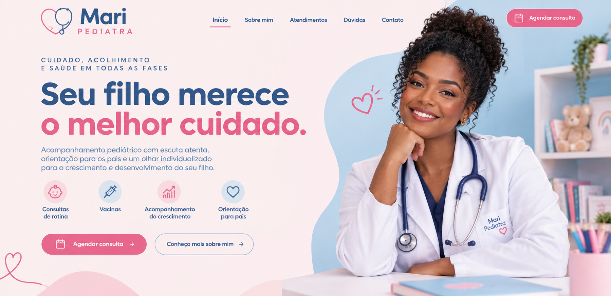
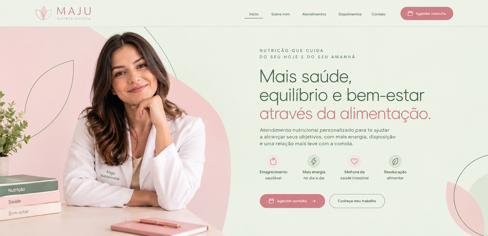
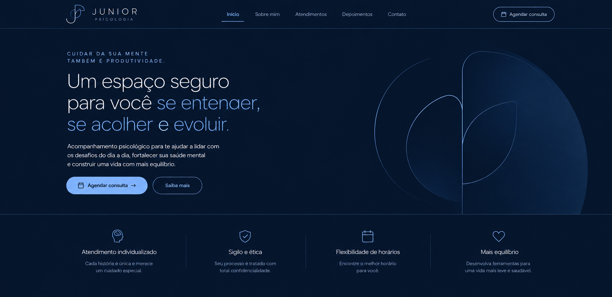

Seu negócio
bem apresentado
bem apresentado
Seu projeto seguro, organizado e versionado dentro do GitHub.
A IdealSite transforma sua presença na internet em uma apresentação profissional, clara e preparada para gerar mais confiança.
Seu projeto seguro, organizado e versionado dentro do GitHub.
Serviços, diferenciais, localização e canais de contato reunidos em uma experiência simples de entender.
Mostre o que você oferece, explique seus diferenciais e facilite o caminho até o contato.
Quando sua empresa tem um espaço próprio e bem construído, fica mais fácil transmitir organização e profissionalismo.
Confiança em cada detalheAumento de leads entre clientes que já fecharam com a IdealSite.
Aumento da percepção de profissionalismo das empresas que adotaram um site profissional.
Cada site nasce das necessidades reais de quem o encomendou: identidade própria, organização clara e um caminho fácil até o contato.





Um processo direto para transformar o que sua empresa oferece em uma experiência digital bonita, clara e funcional.
Reunimos as informações, referências e objetivos que precisam aparecer no site.
Organizamos conteúdo, identidade e estrutura em uma página pensada para apresentar sua empresa.
Depois de aprovado, seu site fica pronto para ser compartilhado nas redes, propostas, buscas e conversas com clientes.
A IdealSite cria sites profissionais para empresas e profissionais que querem apresentar melhor o próprio trabalho e facilitar o contato com novos clientes.
Quero meu orçamento →Para quem já tem um negócio e sente que a internet ainda não apresenta o nível de profissionalismo que existe por trás da marca.
Lojas, negócios locais, escritórios, clínicas, restaurantes e outras empresas que precisam de um espaço próprio para apresentar o que fazem.
Apresente serviços, especialidades, portfólio, diferenciais e canais de contato em um só lugar.
Comece com uma base digital organizada para divulgar a marca e facilitar as primeiras conversas.
Um bom site não precisa complicar a jornada. Ele precisa responder rápido, apresentar bem e levar a pessoa ao próximo passo.
“Aqui eu entendo rapidamente o que essa empresa faz.”
“Consigo ver os serviços e saber qual é o próximo passo.”
“A empresa parece preparada e cuidadosa com a própria imagem.”
“Posso acessar as informações sem depender de horário comercial.”
“Tenho um lugar para conferir tudo antes de chamar no WhatsApp.”
“É fácil compartilhar esse negócio com outra pessoa.”
“A empresa tem uma apresentação que não depende só do Instagram.”
“Quando preciso, encontro o serviço e o contato em poucos cliques.”
Cada página é organizada para apresentar seu valor, reduzir dúvidas e tornar o próximo passo natural para quem visita.
Conhecer nosso trabalhoConteúdo organizado para explicar com clareza o que sua empresa faz e por que ela é uma boa escolha.
Leitura confortável e navegação consistente em celular, tablet e desktop.
Chamadas para ação posicionadas nos momentos certos, sem distrações desnecessárias.
Uma presença profissional preparada para campanhas, redes sociais e novas oportunidades.
Respostas objetivas sobre o projeto, o processo e o que você pode esperar da IdealSite.
Não. A IdealSite atende empresas e profissionais de diferentes tamanhos que querem melhorar a forma como são apresentados na internet.
Tenha um site profissional para explicar seu negócio, mostrar seus diferenciais e facilitar o contato.
Fazer meu orçamento →